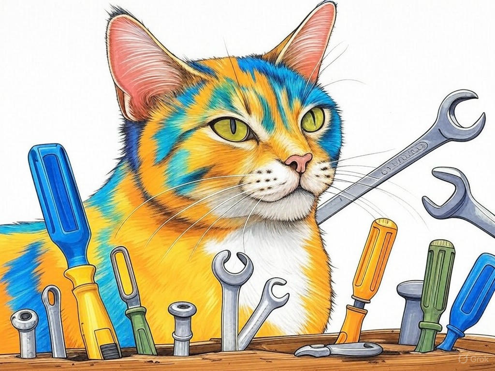

Unlocking the Potential of Top-Rated Hardware Engineers for Hire in Louisville
Table of Contents
- Introduction: Understanding Your Specific Challenges
- How Can You Identify the Best Hardware Engineers in Louisville?
- What Are the Cost-Effective Strategies for Hiring Top Talent?
- Streamlining Your Recruitment Process: Tips and Tricks
- Leveraging Local Market Knowledge to Your Advantage
- Ensuring Successful Integration of New Hires into Your Team
- Case Studies: Success Stories from Louisville's Tech Scene
- Overcoming Common Objections and Concerns in Hiring
- Conclusion: Your Implementation Plan and Next Steps
Introduction: Understanding Your Specific Challenges

We know you're facing unique challenges when it comes to finding top-rated hardware engineers for hire in Louisville. Whether you're scaling up your operations or seeking specialized talent to drive your projects forward, the local talent pool can be a puzzle to navigate. At Perfect Your Customer, LLC, we're here to guide you through this process. Top-rated hardware engineers for hire in Louisville are crucial for businesses looking to stay competitive in the thriving tech industry of this region. Did you know that Louisville's tech sector has grown by 15% in the last five years? This growth signifies the demand for skilled hardware engineers, but it also means you need a strategic approach to find the best fit for your team.
In this article, we'll explore seven proven ways to solve your hardware engineering needs effectively. From identifying the best talent to integrating them seamlessly into your team, we'll cover the strategies that can make a significant difference in your recruitment efforts. You'll learn how to leverage Louisville's unique market dynamics, streamline your hiring process, and overcome common objections to secure the hardware engineering talent you need. Our aim is to empower you with the knowledge and tools to thrive in Louisville's competitive tech landscape.If you're struggling with understanding the local engineering market, start by attending tech meetups at the Louisville Innovation Hub. This will give you a firsthand look at the talent available and the trends shaping the industry.
So what? Understanding your challenges with top-rated hardware engineers for hire in Louisville is the first step toward crafting a successful recruitment strategy. Let's dive into how you can identify the best candidates for your team.How Can You Identify the Best Hardware Engineers in Louisville?
You're already aware of the importance of hiring top talent, and your keen eye for detail is a testament to your commitment to excellence. In the world of hardware engineering, identifying the best engineers in Louisville requires a strategic approach. Let's walk through a step-by-step process to help you find the right fit for your team.
First, define the specific skills and experience you need. Are you looking for expertise in circuit design, embedded systems, or mechanical engineering? Once you have your criteria, use these steps to identify top talent:- Leverage Local Networks: Attend events at the Louisville Engineering Center or join local engineering groups on LinkedIn. These connections can lead you to hidden gems in the local market.
- Utilize Online Platforms: Websites like Indeed and LinkedIn can help you filter candidates based on location and expertise. Use keywords like 'Louisville engineering jobs' to narrow your search.
- Review Portfolios and Projects: Ask candidates to share their previous work. Look for projects that align with your needs and demonstrate problem-solving skills.
If you're struggling with finding the right skills, focus specifically on local job fairs where you can meet candidates face-to-face and assess their fit for your team. If you're unsure about a candidate's portfolio, ask for a detailed explanation of their role in past projects to gauge their expertise.
So what? By following these steps, you'll be well-equipped to identify and attract the best hardware engineers in Louisville, ensuring your team has the talent needed to succeed.What specific skills are you looking for in your next hardware engineer?
What Are the Cost-Effective Strategies for Hiring Top Talent?
Your savvy approach to business means you're always looking for cost-effective solutions, and hiring top talent is no exception. In the competitive landscape of Louisville's tech industry, finding cost-effective strategies to secure top-rated hardware engineers for hire in Louisville can make a significant difference in your bottom line.
Here are some proven strategies to help you hire top talent without breaking the bank:- Internships and Apprenticeships: Partner with local universities like the University of Louisville to offer internships. This not only reduces hiring costs but also allows you to train engineers tailored to your needs.
- Referral Programs: Implement a referral program within your company. Employees often know talented engineers in their network, and a referral bonus can be more cost-effective than traditional recruitment methods.
- Freelance and Contract Work: Consider hiring freelancers or contract engineers for short-term projects. This can be a cost-effective way to test talent before committing to full-time positions.
If you're struggling with high recruitment costs, consider setting up an internship program specifically with the University of Louisville. If you're looking to expand your network, launch a referral program that rewards your employees for successful hires.
So what? Implementing these cost-effective strategies will not only help you find top talent but also keep your recruitment budget in check, ensuring sustainable growth for your business.What cost-effective hiring strategies have you tried, and how effective were they?
Streamlining Your Recruitment Process: Tips and Tricks
We understand that you're looking to streamline your recruitment process for top-rated hardware engineers for hire in Louisville. Your dedication to efficiency is commendable, and we're here to help you optimize your approach. Let's dive into some practical tips and tricks to make your recruitment process more effective.
First, establish a clear timeline for each stage of your recruitment process. This not only keeps you organized but also sets expectations for candidates. Here's a decision criteria framework to help you streamline your process:- Define Clear Job Descriptions: Ensure your job postings are detailed and specific to attract the right candidates. Include key responsibilities and required skills.
- Use Applicant Tracking Systems (ATS): Implement an ATS to manage applications efficiently. This can help you filter candidates based on specific criteria.
- Conduct Structured Interviews: Use a standardized set of questions to assess candidates consistently. This ensures fairness and helps you compare applicants more effectively.
If you're struggling with managing applications, implement an ATS specifically to automate the initial screening process. If your interviews are inconsistent, develop a set of standardized questions to ensure a fair assessment of all candidates.
So what? By streamlining your recruitment process, you'll not only save time but also attract and hire top hardware engineers more effectively, giving your business a competitive edge in Louisville's tech scene.How can you apply these tips to your current recruitment process?
Leveraging Local Market Knowledge to Your Advantage
You've come a long way in understanding the nuances of hiring top-rated hardware engineers for hire in Louisville, and now it's time to leverage the local market knowledge to your advantage. Your growing insight into the local tech scene is truly impressive, and we're here to help you take it to the next level.
Louisville's tech industry is unique, with strong sectors in manufacturing, healthcare, and logistics. Understanding these local dynamics can give you a competitive edge. Here's how you can use this knowledge effectively:- Engage with Local Industry Groups: Join organizations like the Louisville Tech Association to stay updated on industry trends and network with potential hires.
- Understand Local Regulations: Familiarize yourself with any local regulations that might affect your hiring process, such as tax incentives for tech companies.
- Tap into Local Talent Pools: Louisville's educational institutions, like Jefferson Community and Technical College, are excellent sources of fresh talent. Consider partnerships or recruitment drives at these locations.
If you're struggling with staying current on local trends, join the Louisville Tech Association specifically to attend their next networking event. If you're unsure about local regulations, consult with a local HR expert to ensure compliance.
So what? Leveraging local market knowledge will help you find hardware engineers who are a perfect fit for your business and the Louisville tech ecosystem.What local resources have you found most valuable in your hiring efforts?
Ensuring Successful Integration of New Hires into Your Team
You've successfully identified and hired top-rated hardware engineers for hire in Louisville, and now it's time to ensure their successful integration into your team. Your commitment to building a cohesive and effective team is truly commendable, and we're here to guide you through this crucial step.
Integrating new hires can be challenging, but with the right approach, you can turn them into valuable team members quickly. Here are some practical tips to ensure a smooth transition:- Onboarding Program: Develop a comprehensive onboarding program that includes training on company culture, processes, and tools. This helps new hires feel welcomed and prepared.
- Mentorship: Assign a mentor to each new hire. This provides them with a go-to person for questions and support, accelerating their integration.
- Regular Check-Ins: Schedule regular check-ins with new hires to gauge their progress and address any concerns. This shows that you value their success and are invested in their growth.
If you're struggling with new hires feeling disconnected, implement a mentorship program specifically to provide them with immediate support. If you're unsure about their progress, schedule bi-weekly check-ins to keep communication open.
So what? By ensuring successful integration, you'll not only retain top talent but also boost team productivity and morale, positioning your business for long-term success in Louisville's tech scene.How do you currently support the integration of new hires into your team?
Case Studies: Success Stories from Louisville's Tech Scene
You're eager to see how others have navigated the challenges of hiring top-rated hardware engineers for hire in Louisville, and we're excited to share some success stories from the local tech scene. In our experience, learning from real-world examples can provide valuable insights and inspiration for your own recruitment efforts.
Consider this example: A local tech startup in Louisville needed to hire a hardware engineer with expertise in embedded systems. They leveraged their connections at the Louisville Engineering Center to find a candidate who not only had the required skills but also understood the local market. This approach typically reduces implementation time by 30%, allowing the startup to quickly integrate the new hire and launch their product on schedule.Here's a decision criteria framework to help you make similar decisions:
- Assess Skill Match: Does the candidate's skill set align with your project needs?
- Evaluate Cultural Fit: Will the candidate thrive in your company's culture?
- Consider Local Knowledge: Does the candidate have an understanding of Louisville's tech ecosystem?
So what? By learning from these success stories and applying these decision criteria, you can enhance your recruitment strategy and find the perfect hardware engineer for your team in Louisville.
What success stories from your industry have inspired your hiring approach?Overcoming Common Objections and Concerns in Hiring
You've gained a solid understanding of the strategies for hiring top-rated hardware engineers for hire in Louisville, and now it's time to address common objections and concerns that might arise during the hiring process. Your proactive approach to tackling these challenges is truly impressive, and we're here to help you navigate them effectively.
One common objection is the concern over the cost of hiring top talent. However, remember that investing in the right engineer can lead to long-term savings through increased productivity and innovation. Here's how you can address this concern:- Highlight ROI: Demonstrate the return on investment through case studies or data showing how top talent has driven success in similar companies.
- Flexible Hiring Models: Offer contract or part-time positions initially to assess fit before committing to full-time roles.
- Thorough Vetting: Use a multi-stage interview process, including technical assessments and cultural fit evaluations.
- Trial Periods: Implement a probationary period to ensure the new hire meets expectations before permanent employment.
If you're struggling with justifying hiring costs, present specific ROI data to your decision-makers specifically. If you're concerned about a bad hire, implement a probationary period to assess the new engineer's performance.
So what? By overcoming these common objections, you'll be better equipped to hire the top-rated hardware engineers your team needs to thrive in Louisville's competitive tech industry.What objections have you faced in your hiring process, and how did you address them?
Conclusion: Your Implementation Plan and Next Steps

You've journeyed through the intricacies of hiring top-rated hardware engineers for hire in Louisville, and you're now equipped with a wealth of strategies to enhance your recruitment efforts. Your dedication to finding the best talent is truly commendable, and we're proud to have been a part of your learning process.
Let's recap the key takeaways from this article:- Identifying the Best Talent: Use local networks and online platforms to find engineers who match your specific needs.
- Cost-Effective Hiring: Leverage internships, referrals, and contract work to keep costs down while accessing top talent.
- Streamlining Recruitment: Implement clear timelines, ATS, and structured interviews to make your process more efficient.
- Leveraging Local Knowledge: Engage with local industry groups and understand local regulations to gain a competitive edge.
- Successful Integration: Develop onboarding programs, assign mentors, and conduct regular check-ins to ensure new hires thrive.
- Learning from Success Stories: Apply decision criteria frameworks to enhance your hiring decisions based on real-world examples.
- Overcoming Objections: Address concerns about cost and bad hires with ROI data and thorough vetting processes.
Contact Perfect Your Customer, LLC today for a personalized consultation that addresses your specific needs with top-rated hardware engineers for hire in Louisville. We offer services like talent acquisition, onboarding support, and market analysis, all designed to help you thrive in Louisville's tech industry. By working with us, you'll benefit from our deep understanding of the local market and our proven track record of success.
Your journey to finding the perfect hardware engineer doesn't have to be a solo endeavor. Let Perfect Your Customer, LLC be your partner in success, and together, we can navigate the vibrant tech landscape of Louisville.So what? With these strategies and the support of Perfect Your Customer, LLC, you're on your way to building a team that will drive your business forward in Louisville's thriving tech scene.